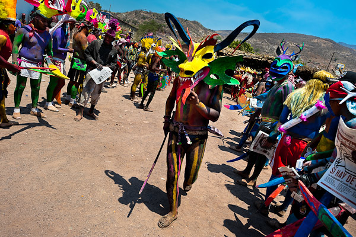
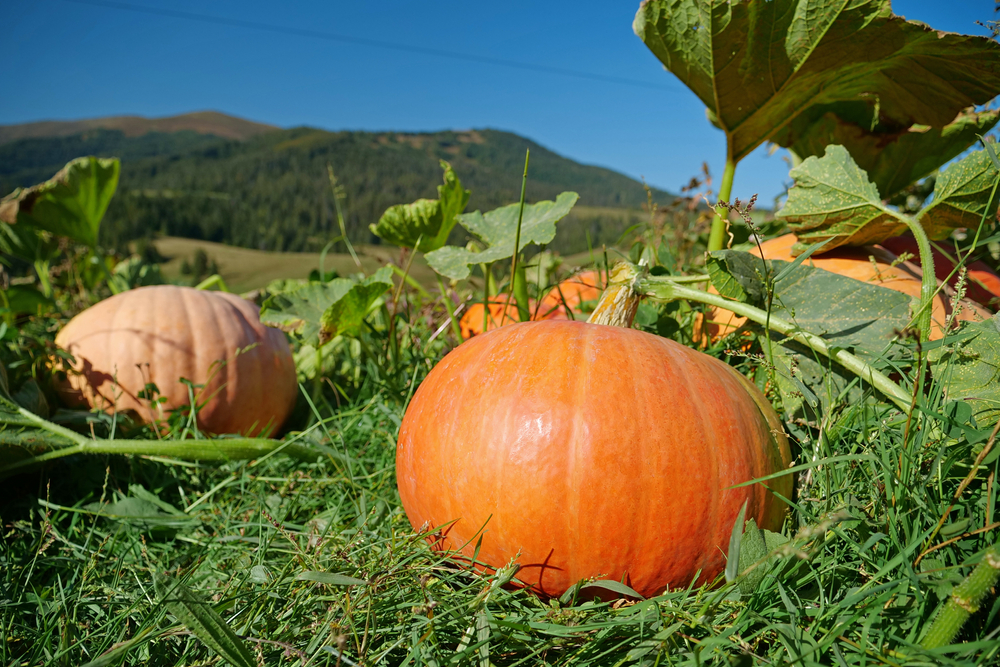

UBICACIÓN: Del Nayar está situado en la región serrana del estado de Nayarit, México. Este municipio se destaca por su gran población indígena, entre los cuales se encuentran los coras, huicholes y tepehuanos. Su ubicación en la Sierra Madre Occidental ofrece paisajes espectaculares y una rica diversidad cultural.
HISTORIA: Del Nayar tiene una herencia histórica profundamente arraigada en las tradiciones indígenas. Durante siglos, las comunidades indígenas han habitado estas tierras, manteniendo vivas sus prácticas ancestrales, idiomas y costumbres. El municipio ha sido reconocido como un bastión de la cultura indígena en México, y sus habitantes continúan honrando sus raíces a través de rituales y festividades tradicionales.
FIESTAS: Entre las celebraciones más destacadas se encuentra el Hikuri Neixa, una festividad indígena de los huicholes en honor al peyote, símbolo sagrado de conexión espiritual. Estas fiestas incluyen danzas, música y rituales que muestran la riqueza cultural del municipio. Además, las comunidades coras y tepehuanas celebran otras ceremonias tradicionales a lo largo del año.
PRODUCCIÓN: La economía de Del Nayar está basada principalmente en la agricultura de subsistencia, donde cultivan maíz, frijol y calabaza. También destacan las artesanías, que incluyen tejidos y bordados tradicionales, así como la producción de medicina tradicional basada en conocimientos indígenas sobre plantas medicinales.
